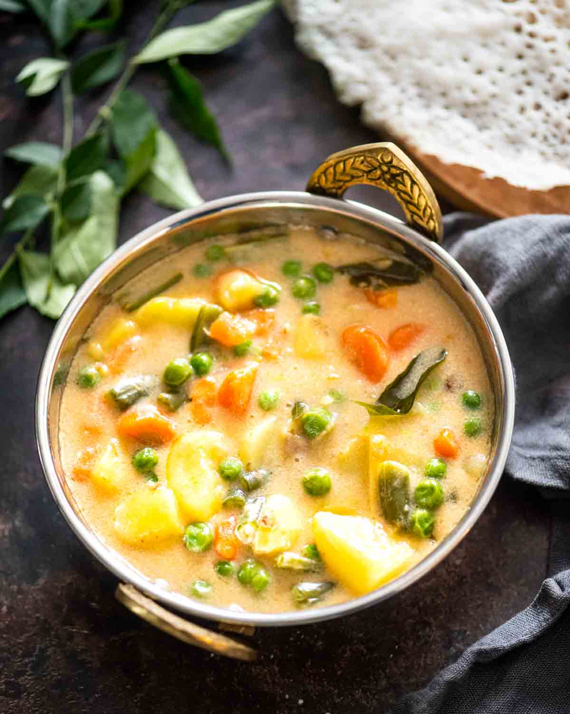

Stew.html
Home

Description
This stew is a rich, hearty dish packed with tender
meat, root vegetables, and bold, comforting flavors.
Slow-cooked to perfection, it brings together the
essence of traditional American home-style cooking.
Ingredients
- 2 tablespoons olive oil
- 2 tablespoons olive oil
- 1 large onion, chopped
- 3 cloves garlic, minced
- 3 carrots, sliced
- 3 potatoes, peeled and diced
Steps
- Sear the Meat
- Sauté the Aromatics
- Add Vegetables
- Build the Stew Base